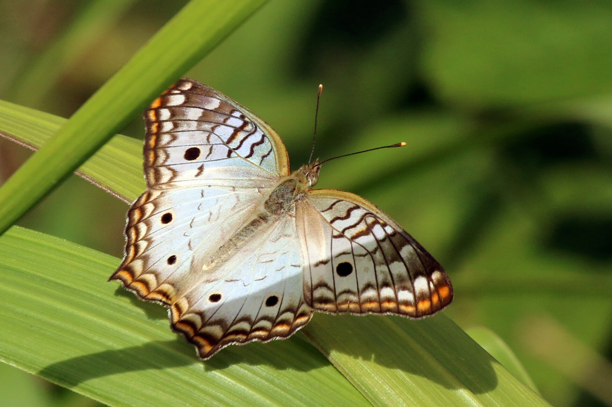
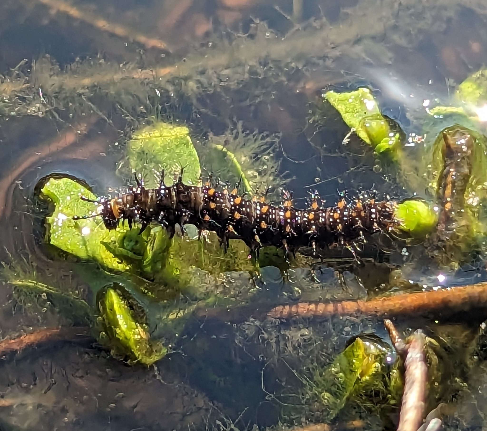

Anartia jatrophae
Common nowThis is the butterfly of Cape Coral canals in late August. Water hyssop and frogfruit are still thick on ditch edges, and White Peacocks stay low over that wet ground. People photographed one in Fort Myers today.

Canal banks, wet ditches, pond edges, weedy yards.
Water hyssop
Bacopa monnieriturkey tangle frogfruit
Phyla nodifloraWhitish wings with brown markings, orange margins, one black forewing spot and two hindwing spots plus a short tail.